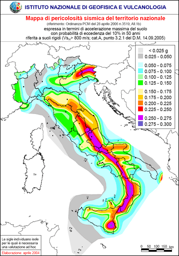

Oggi ricade il trentennale del terremoto del 23 novembre 1980, noto anche come il “terremoto dell’Irpinia” , i cui effetti devastanti colpirono una vasta area dell’Italia meridionale, posta a cavallo delle province di Avellino, Salerno e Potenza, mietendo quasi 3000 vittime. Tra le immagini indelebili ancora scolpite nella mia memoria di potentino vi è quella dell’orologio del Palazzo del Governo a Piazza Mario Pagano che si è fermato alle 19:34, l’ora esatta in cui la terra ha cominciato a tremare per 90 interminabili secondi. Quel quadrante rotto rappresenta l’emblema di una profonda ferita che ancora oggi non si è rimarginata del tutto.
Trenta anni fa non esisteva ancora il Sistema Nazionale di Protezione Civile, così come lo conosciamo oggi, e si nominò un Commissario Straordinario allo scopo di fronteggiare l’emergenza e coordinare i soccorsi delle popolazioni interessate dal terremoto, che entrò in servizio solamente 24 ore dopo la catastrofe. Gli eventi sismici molto recenti verificatisi in Abruzzo (aprile 2009) e ad Haiti (gennaio 2010), così come altre calamità naturali, dimostrano come la celerità degli interventi durante le prime ore di soccorso sia fondamentale nel salvataggio di vite umane. Una risposta tempestiva e efficiente della Protezione Civile può fare la differenza, ma tutto ciò non può e non deve bastare.
“L’Italia è un paese di santi, poeti, navigatori…” e purtroppo anche di terremoti. Basti pensare che nell’arco di un mese si verificano generalmente diverse centinaia di eventi sismici che interessano la quasi totalità del nostro Paese (si salvano la Sardegna e la penisola salentina), dei quali fortunatamente la maggior parte è percepita solo a livello strumentale e non dalla popolazione. Dobbiamo pertanto saperci convivere proprio come avviene in altri paesi evoluti, come il Giappone o la California, senza farci cogliere del tutto impreparati, come avveniva in passato.
La comunità scientifica internazionale allo stato attuale non ha ancora individuato un modello attendibile di predizione dei terremoti, pur essendo attivi promettenti filoni di ricerca basati sullo studio dei precursori sismici, anche mediante l’impiego di immagini telerilevate. Premesso ciò, il migliore approccio possibile da seguire consiste nella mitigazione del rischio sismico attraverso la corretta applicazione delle norme sulle costruzioni e l’adozione di criteri costruttivi tali da scongiurare il pericolo di crollo degli edifici, tenendo conto della mappa di pericolosità sismica del territorio nazionale – una delle più avanzate in Europa – e recependo gli studi di microzonazione sismica all’interno degli strumenti urbanistici comunali, in modo da disincentivare il più possibile l’edificazione nei siti potenzialmente oggetto di fenomeni di amplificazione locale. L’insieme di questi strumenti di rilevante importanza preventiva può essere inoltre utilizzato per trasmettere alla popolazione le nozioni di base del rischio sismico, ovvero una maggiore consapevolezza del fenomeno in modo da poterlo affrontare correttamente.
Diffondere informazioni scientifiche aggiornate e tali da consentire una conoscenza approfondita del territorio è il miglior strumento per avviare strategie di prevenzione e riduzione dei rischi naturali.
E quale occasione migliore per apprendere questi concetti, se non in tenera età? Assolutamente in questa direzione vanno alcune iniziative dell’INGV (Istituto Nazionale di Geofisica e Vulcanologia) finanziate dal Dipartimento nazionale della Protezione Civile. Mi riferisco in particolare al progetto EDURISK, nato circa una ventina di anni fa ad opera di un gruppo di ricercatori del GNDT (Gruppo Nazionale per la Difesa dei Terremoti, confluito nel 2001 nell’INGV), che coinvolge esperti nel settore dello studio e della riduzione dei rischi naturali, dei vari settori disciplinari attinenti (geologia, sismologia, pericolosità sismica, ingegneria sismica, sismologia storica, psicologia dell’emergenza), uno staff di progettazione educativa proveniente dall’editoria scolastica e multimediale, autori di libri per ragazzi, disegnatori, illustratori, fumettisti ed esperti di didattica. L’obiettivo principale del progetto EDURISK consiste nel mettere in campo i ricercatori, la scuola e tutti i cittadini, coinvolgendoli in un progetto di formazione e scoperta del rischio sismico. In particolare, il frutto di tale iniziativa consiste nella pubblicazione di libri, opuscoli e dvd a supporto del progetto formativo di diffusione delle conoscenze sul rischio sismico e vulcanico (materiale didattico). Il progetto è, inoltre, presente nei principali social network (Facebook, Twitter, Anobii e YouTube). Per ulteriori dettagli, si rimanda direttamente al portale del progetto. Di recente, EDURISK ha prodotto la docufiction “Non chiamarmi Terremoto”, che affronta temi quali la prevenzione, il rispetto per le norme sismiche e i comportamenti corretti da tenere in emergenza. Nel seguito, è possibile visionarne l’anteprima e questo è il sito dell’iniziativa.

D’altro canto, anche lo stesso INGV è presente su Twitter e YouTube. Nel primo caso si tratta di un servizio sperimentale di informazione sui terremoti in Italia (e non solo), mentre il canale su YouTube, molto interessante, prevede periodicamente degli aggiornamenti e la descrizione dell’attività sismica in corso, anche per spiegare alcuni aspetti della ricerca che viene svolta dai ricercatori dell’INGV.
Recentemente, qui su TANTO si scongiurava l’eventualità che il prof. Boschi, presidente dell’INGV, adottasse politiche restrittive sul rilascio dei dati di competenza dell’Istituto. E’ auspicabile, inoltre, che si continui nella direzione già abbondantemente tracciata nella diffusione capillare delle informazioni. Solo così si potrà contribuire efficacemente al raggiungimento di una sempre maggiore consapevolezza e conoscenza del fenomeno terremoto da parte dei ricercatori, dei tecnici e della popolazione.
I contenuti potrebbero non essere più adeguati ai tempi!

By Pietro Blu Giandonato on nov 23, 2010
Come dimenticare?
Il 23 novembre 1980 era domenica, avevo 9 anni e mi trovavo dai miei nonni a Foggia. Durante quei 90 interminabili secondi non capii cosa stava realmente accadendo, mi mantenni alla cornice della porta per non cadere, e ricordo il rombo spaventoso che mi lasció atterrito.
Mio nonno gridò “il terremoto!” e corsi fuori sul balcone, immaginando di trovare per terra una profonda voragine, perché pensai istintivamente che la terra si fosse spaccata.
Come SIGEA di Puglia, Basilicata e Campania, ieri 22 novembre abbiamo organizzato un convegno sia per ricordare la tremenda catastrofe, sia come “momento di discussione e di confronto in tema di sicurezza e pianificazione sismica”.
E’ vero, la conoscenza, l’informazione, la prevenzione, la “preparedness” sono l’unico modo per fronteggiare ciò che è imponderabile, incontrollabile e imprevisto: un terremoto.
Proprio in tal senso nel mio blog qualche tempo fa, in occasione di un sisma che è stato percepito chiaramente a Foggia, avevo scritto un articolo nel quale mettevo in evidenza proprio l’importanza del coinvolgimento dei cittadini, in qualità di “valutatori” o veri e propri “sensori” degli eventi sismici.
Ricordo il “rombo” di 30 anni fa, e se ci fosse stata Internet e il progetto dell’INGV “Hai sentito il terremoto”, sarei corso a segnalarlo…
By Antonio Falciano on nov 23, 2010
Pietro, grazie per la tua testimonianza e per le utili segnalazioni. Il coinvolgimento dei cittadini (come giustamente affermi nel tuo post, “noi stessi facciamo parte del sistema di protezione civile nazionale”), unitamente ad una maggiore consapevolezza del fenomeno, è un aspetto strategico sul quale occorre far leva sempre e non solo quando si verificano le catastrofi. Oggi abbiamo una conoscenza del territorio e strumenti (tra cui anche i sistemi informativi geografici e i moderni sensori satellitari) allora quasi impensabili. Se funzionano bene insieme tutte queste componenti, allora si che possiamo evitare altre tragedie.
PS: correre fuori sul balcone durante un terremoto non è consigliabile (naturalmente lo dico casomai qualche giovane navigatore si avventurasse fin qui a leggere, non per rimproverarti! )
)
By Pietro Blu Giandonato on nov 23, 2010
No no, figurati Antonio, è solo che a 9 anni non ero ancora laureato in geologia e EDURISK probabilmente non esisteva
By Alessio on nov 23, 2010
A 9 anni non eri laureato?! Vergogna! \n\nIo a quell\’epoca avevo 1 anno, non ero laureato… e nemmeno diplomato
\n\nIo a quell\’epoca avevo 1 anno, non ero laureato… e nemmeno diplomato  e chiaramente non ho ricordi diretti legati a quell\’evento. Ho letto il post di Antonio e la testimonianza di Pietro Blu e vi confesso che conosco solo marginalmente gli strumenti e le iniziative messe in opera dall\’INGV e come in occasione del post citato in chiusura di questo qui, mi auguro che le informazioni condivise liberamente siano sempre di più e si prosegua ad informare e sensibilizzare i cittadini riguardo al rischio sismico.
e chiaramente non ho ricordi diretti legati a quell\’evento. Ho letto il post di Antonio e la testimonianza di Pietro Blu e vi confesso che conosco solo marginalmente gli strumenti e le iniziative messe in opera dall\’INGV e come in occasione del post citato in chiusura di questo qui, mi auguro che le informazioni condivise liberamente siano sempre di più e si prosegua ad informare e sensibilizzare i cittadini riguardo al rischio sismico.